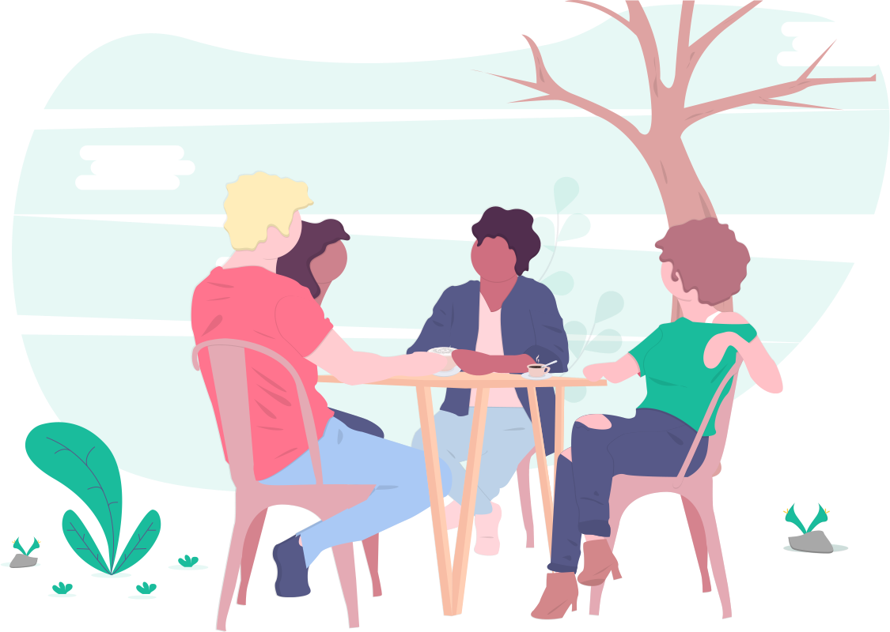

<ion-content>
    <br>
    <div class="image-container">
        
    </div>
    <ion-grid text-center>
        <ion-row>
            <ion-col col-12>
                <p class="header">Know other Wandrers?</p>
                <p class="subheader">Tell your friends! A larger network means more opportunity to Wandr.</p>
            </ion-col>
        </ion-row>
        <ion-row>
            <ion-col col-12 class="stats">
                <label>1st Degree Connections:</label>&nbsp;<span>{{firstConnectionCount}}</span><br>
                <label>2nd Degree Connections:</label>&nbsp;<span>{{secondConnectionCount}}</span><br>
            </ion-col>
        </ion-row>
        <br>
        <br>
        <ion-row>
            <ion-col col-12>
                <button ion-button large square outline color="secondary" (click)="openShareSheet()">
                    SHARE
                </button>
            </ion-col>
        </ion-row>
    </ion-grid>
</ion-content>
  